原文连接:https://www.cnblogs.com/mzq123/p/12003236.html
SpringBoot源码学习系列之嵌入式Servlet容器启动原理
@
1、博客前言简单介绍
SpringBoot的自动配置就是SpringBoot的精髓所在，对于SpringBoot具体实现不是很清楚的读者，可以读取我的源码学习专栏，里面有对SpringBoot的源码进行学习的一些博客，内容比较简单，比较适合入门学习
对于SpringBoot项目是不需要配置Tomcat、jetty等等Servlet容器，直接启动application类既可，SpringBoot为什么能做到这么简捷？原因就是使用了内嵌的Servlet容器，默认是使用Tomcat的，具体原因是什么？为什么启动application就可以启动内嵌的Tomcat或者其它Servlet容器？ok，本博客就已SpringBoot嵌入式Servlet的启动原理简单介绍一下
环境准备：
- SmartGit
- IntelliJ IDEA
- Maven
- SpringBoot2.2.1
本博客先创建一个SpringBoot项目，基于最新的2.2.1版本，阅读源码之前先进行一些必要的应用代码实践，先学习应用实践，有助于理解源码
在SpringBoot官网找到嵌入式Servlet容器相关的描述：

Under the hood, Spring Boot uses a different type of ApplicationContext for embedded servlet container support. The ServletWebServerApplicationContext is a special type of WebApplicationContext that bootstraps itself by searching for a single ServletWebServerFactory bean. Usually a TomcatServletWebServerFactory, JettyServletWebServerFactory, or UndertowServletWebServerFactory has been auto-configured.
这是比较重要的信息，简单翻译一下，里面提到ServletWebServerApplicationContext这是一种特殊的ApplicationContext 类，也就是启动时候，用来扫描ServletWebServerFactory类型的类的，ServletWebServerFactory类是一个接口类，具体的实现类是TomcatServletWebServerFactory, JettyServletWebServerFactory, or UndertowServletWebServerFactory etc.
2、定制servlet容器
然后如何自定义嵌入式Servlet容器的配置？在官方文档里找到如图对应的描述：
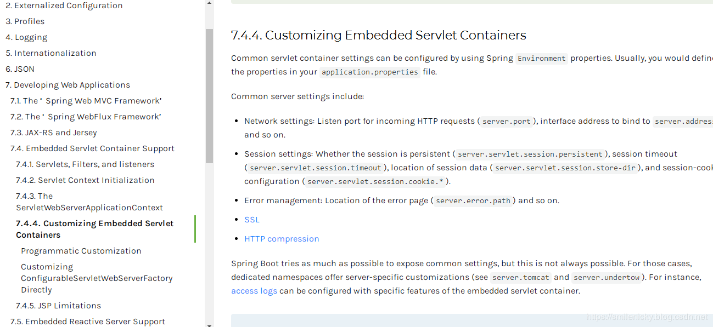
方法1：修改application配置
从官方文档可以看出支持的配置有如下所示，所以要修改servlet容器配置，直接在application配置文件修改即可：
- 网络设置: 监听端口(server.port)、服务器地址(server.address)等等
- Session设置: 会话是否持久 (server.servlet.session.persistent),会话超时(server.servlet.session.timeout), 会话数据的位置 (server.servlet.session.store-dir), 会话对应的cookie配置 (server.servlet.session.cookie.*) 等等
- 错误管理: 错误页面位置 (server.error.path)等等
- SSL设置：具体参考Configure SSL
- HTTP compression：具体参考Enable HTTP Response Compression
方法2：自定义WebServerFactoryCustomizer定制器类
从文档里还找到了通过新建自定义的WebServerFactoryCustomizer类来实现属性配置修改，WebServerFactoryCustomizer也就是一种定制器类：
import org.springframework.boot.web.server.WebServerFactoryCustomizer;
import org.springframework.boot.web.servlet.server.ConfigurableServletWebServerFactory;
import org.springframework.stereotype.Component;
/**
* <pre>
* 自定义的WebServerFactory定制器类
* </pre>
* @author nicky
* <pre>
* 修改记录
* 修改后版本: 修改人： 修改日期: 2019年12月01日 修改内容:
* </pre>
*/
@Component
public class WebServerFactoryCustomizationBean implements WebServerFactoryCustomizer<ConfigurableServletWebServerFactory> {
@Override
public void customize(ConfigurableServletWebServerFactory server) {
server.setPort(8081);
}
}ok，官方文档里提供了如上的代码实例，当然也可以通过@bean注解进行设置，代码实例如：
@Configuration
public class MyServerConfig {
/**
* 自定义的WebServerFactory定制器类
* @return
*/
@Bean
public WebServerFactoryCustomizer<ConfigurableServletWebServerFactory> webServerFactoryCustomizer(){
return new WebServerFactoryCustomizer<ConfigurableServletWebServerFactory>() {
@Override
public void customize(ConfigurableServletWebServerFactory factory) {
factory.setPort(8082);
}
};
}
}3、变换servlet容器
SpringBoot2.2.1版本支持的内嵌servlet容器有tomcat、jetty(适用于长连接)、undertow(高并发性能不错，但是默认不支持jsp)，不过项目默认使用的是Tomcat的
我们可以找新建的一个SpringBoot项目，要求是集成了spring-boot-starter-web的工程，在pom文件右键->Diagrams->Show Dependencies，可以看到对应的jar关系图：
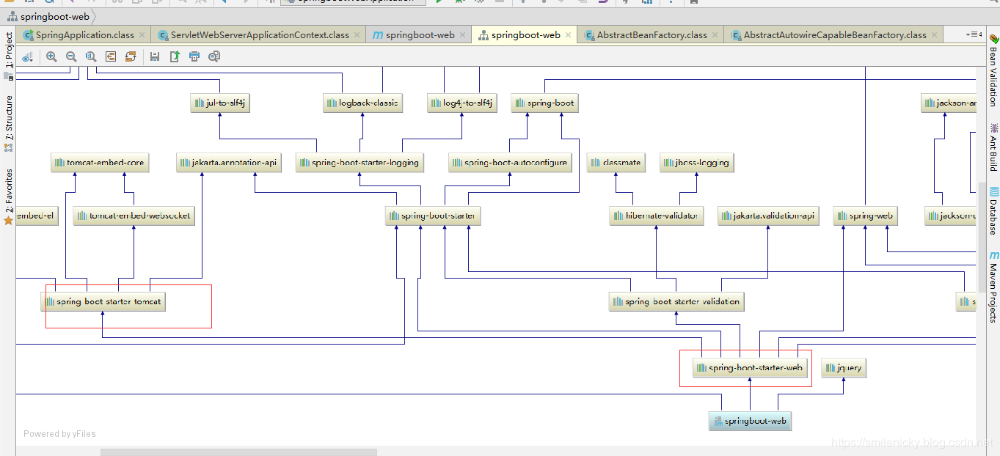
ok，从图可以看出，SpringBoot默认使用是Servlet容器是Tomcat，然后如果要切换其它嵌入式Servlet容器，要怎么实现？我们可以在图示选择spring-boot-starter-tomcat右键exclusion，然后引入其它的servlet容器，pom配置如图：
<dependency>
<groupId>org.springframework.boot</groupId>
<artifactId>spring-boot-starter-web</artifactId>
<exclusions>
<exclusion>
<groupId>org.springframework.boot</groupId>
<artifactId>spring-boot-starter-tomcat</artifactId>
</exclusion>
</exclusions>
</dependency>
<dependency>
<groupId>org.springframework.boot</groupId>
<artifactId>spring-boot-starter-jetty</artifactId>
</dependency>4、servlet容器启动原理
ok，有了前面应用方面的学习之后，就可以简单跟一下Springboot是怎么对servlet容器进行自动配置的？内嵌的默认Tomcat容器是怎么样启动的？
从之前博客的学习，可以知道Springboot的自动配置都是通过一些AutoConfiguration类进行自动配置的，所以同理本博客也找一些对应的类，ServletWebServerFactoryAutoConfiguration 就是嵌入式servlet容器的自动配置类，简单跟一下其源码
@Configuration(proxyBeanMethods = false)
@AutoConfigureOrder(Ordered.HIGHEST_PRECEDENCE)
@ConditionalOnClass(ServletRequest.class)
@ConditionalOnWebApplication(type = Type.SERVLET)
@EnableConfigurationProperties(ServerProperties.class)//使ServerProperties配置类起效
@Import({ ServletWebServerFactoryAutoConfiguration.BeanPostProcessorsRegistrar.class,
ServletWebServerFactoryConfiguration.EmbeddedTomcat.class,
ServletWebServerFactoryConfiguration.EmbeddedJetty.class,
ServletWebServerFactoryConfiguration.EmbeddedUndertow.class })//@Import是Spring框架的注解，作用是将对应组件加载到容器，这里关键的是BeanPostProcessorsRegistrar，一个后置处理类
public class ServletWebServerFactoryAutoConfiguration {
@Bean
public ServletWebServerFactoryCustomizer servletWebServerFactoryCustomizer(ServerProperties serverProperties) {
return new ServletWebServerFactoryCustomizer(serverProperties);
}
//Tomcat的定制器类，起作用的条件是有Tomcat对应jar有引入项目的情况，默认是引入的，所以会执行Tomcat的servletWeb工厂定制类
@Bean
@ConditionalOnClass(name = "org.apache.catalina.startup.Tomcat")
public TomcatServletWebServerFactoryCustomizer tomcatServletWebServerFactoryCustomizer(
ServerProperties serverProperties) {
return new TomcatServletWebServerFactoryCustomizer(serverProperties);
}
....
//注册重要的后置处理器类WebServerFactoryCustomizerBeanPostProcessor，在ioc容器启动的时候会调用后置处理器
public static class BeanPostProcessorsRegistrar implements ImportBeanDefinitionRegistrar, BeanFactoryAware {
private ConfigurableListableBeanFactory beanFactory;
//设置ConfigurableListableBeanFactory
@Override
public void setBeanFactory(BeanFactory beanFactory) throws BeansException {
if (beanFactory instanceof ConfigurableListableBeanFactory) {
this.beanFactory = (ConfigurableListableBeanFactory) beanFactory;
}
}
@Override
public void registerBeanDefinitions(AnnotationMetadata importingClassMetadata,
BeanDefinitionRegistry registry) {
if (this.beanFactory == null) {
return;
}
registerSyntheticBeanIfMissing(registry, "webServerFactoryCustomizerBeanPostProcessor",
WebServerFactoryCustomizerBeanPostProcessor.class);
registerSyntheticBeanIfMissing(registry, "errorPageRegistrarBeanPostProcessor",
ErrorPageRegistrarBeanPostProcessor.class);
}
private void registerSyntheticBeanIfMissing(BeanDefinitionRegistry registry, String name, Class<?> beanClass) {
if (ObjectUtils.isEmpty(this.beanFactory.getBeanNamesForType(beanClass, true, false))) {
RootBeanDefinition beanDefinition = new RootBeanDefinition(beanClass);
beanDefinition.setSynthetic(true);
registry.registerBeanDefinition(name, beanDefinition);
}
}
}
}从自动配置类里，我们并不能很明确地理解自动配置是怎么运行的，只看重关键的一些信息点，比如注册了Tomcat的ServletWebServer工厂的定制器类，方法是tomcatServletWebServerFactoryCustomizer，还有一个后置处理类BeanPostProcessorsRegistrar，后置处理是Spring源码里是很关键的，所以这里可以继续点一下TomcatServletWebServerFactoryCustomizer，Tomcat的webServer工厂定制器类
也是一个WebServerFactoryCustomizer类型的类，从前面的应用学习，这个类是进行servlet容器的一些定制
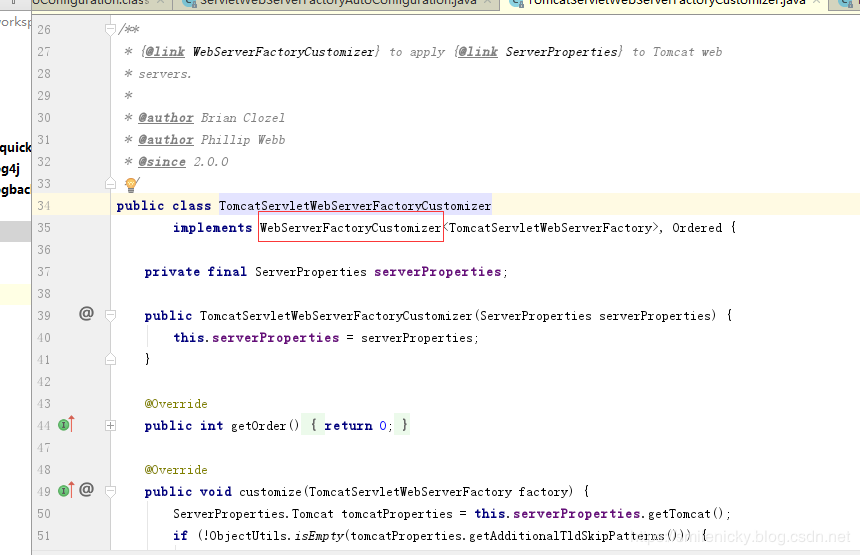
这个是关键的方法，主要是拿ServerProperties配置类里的信息进行特定属性定制
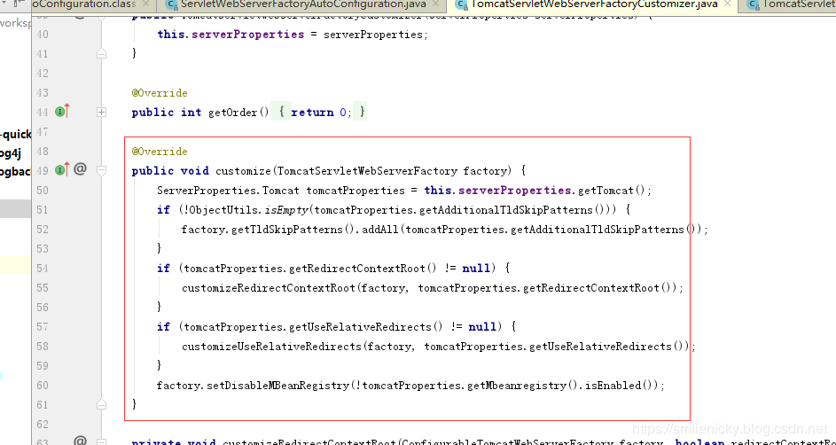
所以，这里就可以知道Tomcat的配置是通过定制器类TomcatServletWebServerFactoryCustomizer进行定制的，其工厂类是TomcatServletWebServerFactory
TomcatServletWebServerFactory工厂类进行Tomcat对象的创建，必要参数的自动配置
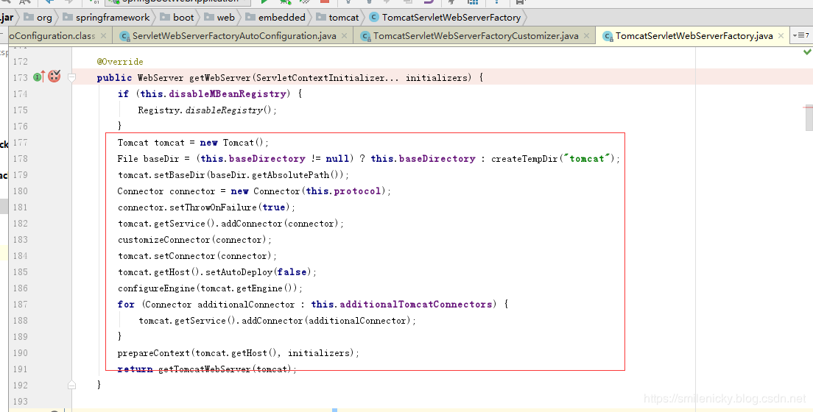
ok，简单跟了一下源码之后，我们知道了TomcatServletWebServerFactoryCustomizer是Tomcat的定制器类，Tomcat对象的创建是通过TomcatServletWebServerFactory类的，然后，有个疑问，这个定制器类是什么时候创建的？为什么一启动Application类，嵌入式的Tomcat也启动了？打成jar格式的Springboot项目，只要运行jar命令，不需要启动任何servlet容器，项目也是正常运行的？然后这个BeanPostProcessorsRegistrar后置处理类有什么作用？ok，带着这些疑问，我们还是用调试一下源码
如图，打断点调试，看看Tomcat定制器是怎么创建的？
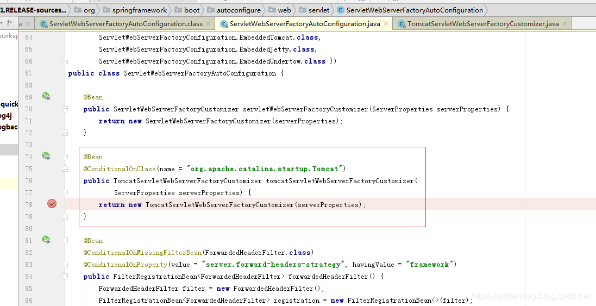
定制器类被调用了，其对应的工厂类也会起作用，打个断点，看看工厂类是怎么调用的？
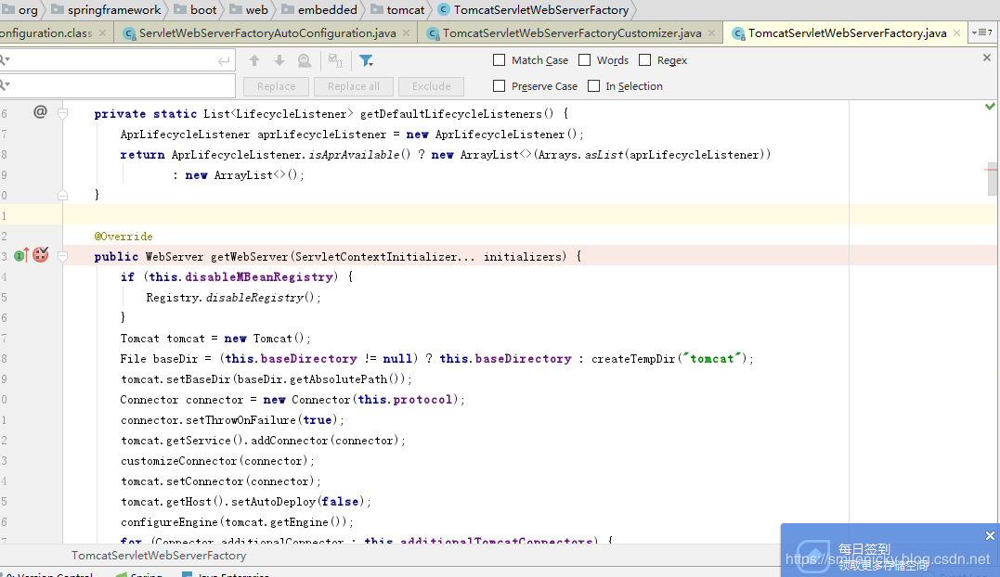
ok，启动Application类，在idea里调试，如图，可以跟着调用顺序，一点点跟源码，如图所示，调用了Springboot的run方法
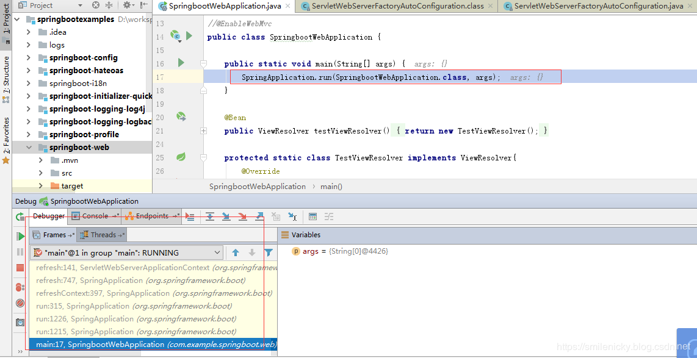
run方法里的刷新上下文方法，refreshContext其实也就是创建ioc容器，初始化ioc容器，并创建容器的每一个组件
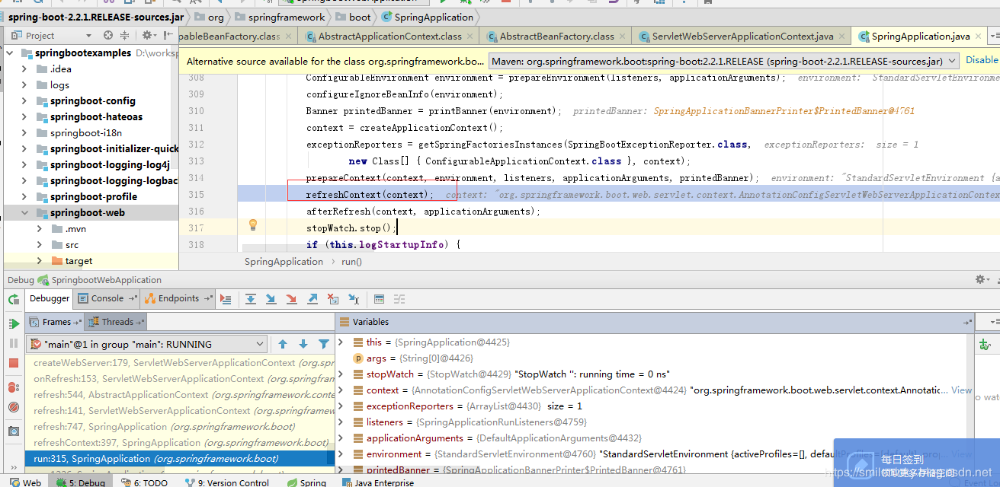
这里注意到了，调用到了ServletWebServerApplicationContext类的refresh方法，ServletWebServerApplicationContext类前面也介绍到了，这个类是一种特殊的ApplicationContext类，也就是一些ioc的上下文类，作用于WebServer类型的类
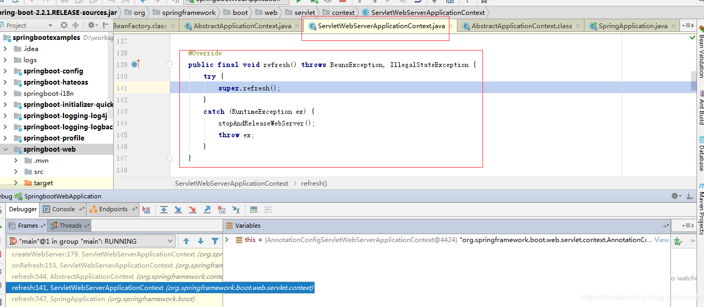
创建webServer类，先创建ioc容器，调用基类的onRefresh方法，然后再调用createWebServer方法
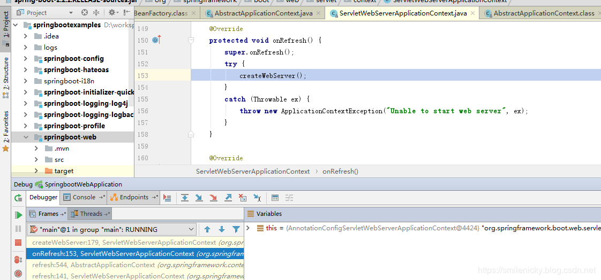
ioc的servletContext组件没被创建的情况，调用ServletWebServerFactory类获取WebServer类，有servletContext的情况，直接从ioc容器获取
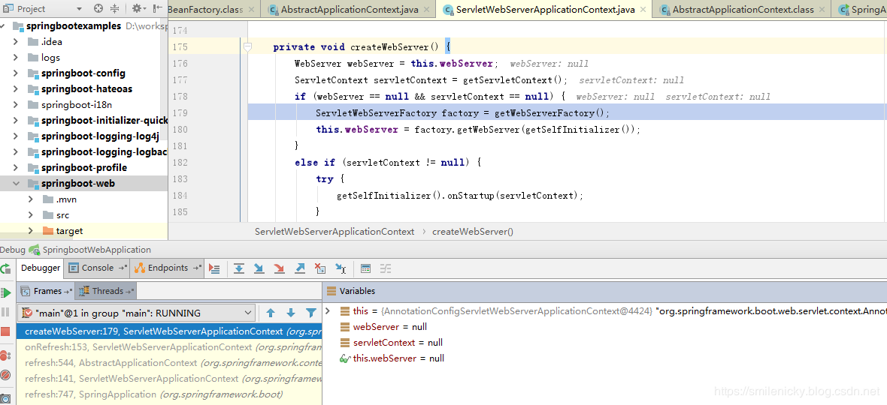
扫描ioc容器里是否有对应的ServletWebServerFactory类，TomcatServletWebServerFactory是其中一种，通过调试，是有扫描到的，所以从ioc容器里将这个bean对应的信息封装到ServletWebServerFactory对象
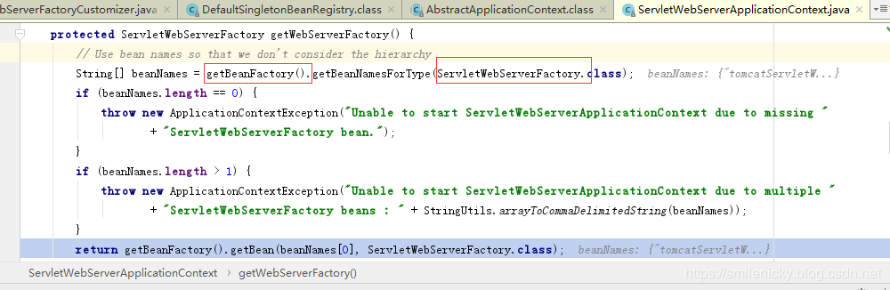
接着是ioc容器创建bean的过程，这个一个比较复杂的过程，因为是单例的，所以是调用singleObjects进行存储
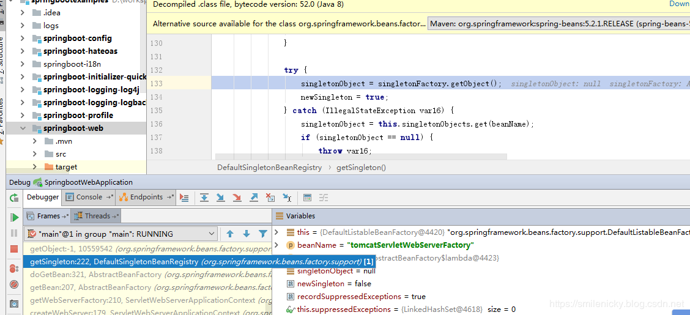
bean被创建之后，调用了后置处理器，这个其实就是Spring的源码里的bean的创建过程，后置处理器是很关键的，在bean被创建，还没进行属性赋值时候，就调用了后置处理器
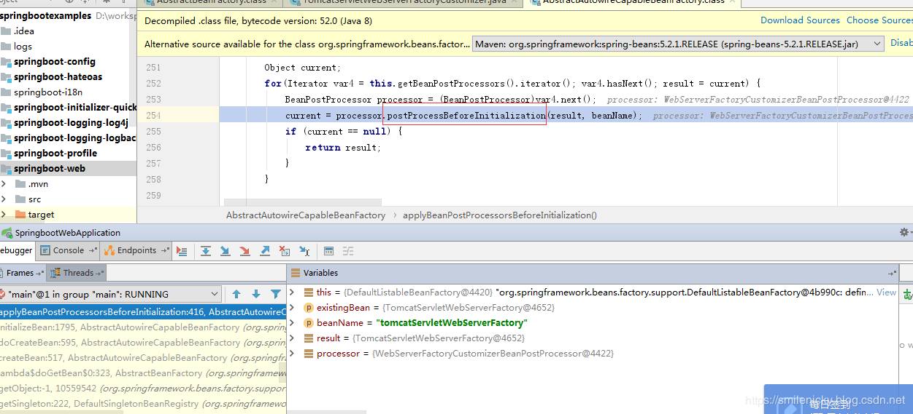
关键点，这里是检测是否有WebServerFactory工厂类，前面的调试发现已经有Tomcat的WebServer工厂类，所以是会调用后置处理器的
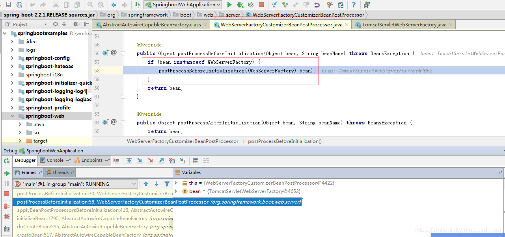
调用了WebServerFactoryCustomizerBeanPostProcessor这个后置处理类，然后拿到一个WebServerFactoryCustomizer定制器类，也就是TomcatWebServerFactoryCustomizer，通过后置处理器调用定制方法customize
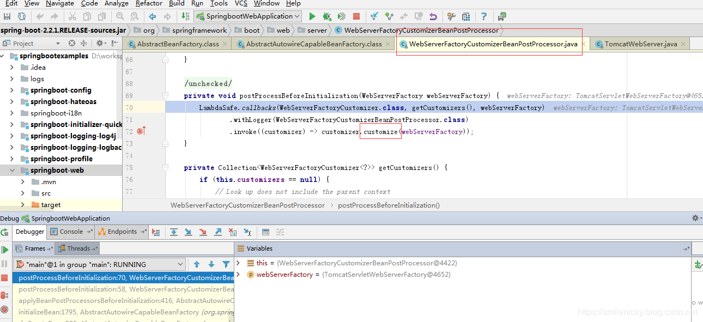
然后WebServerFactoryCustomizerBeanPostProcessor这个后置处理器是什么注册的？往前翻Springboot的自动配置类，在这里找到了WebServerFactoryCustomizerBeanPostProcessor的注册
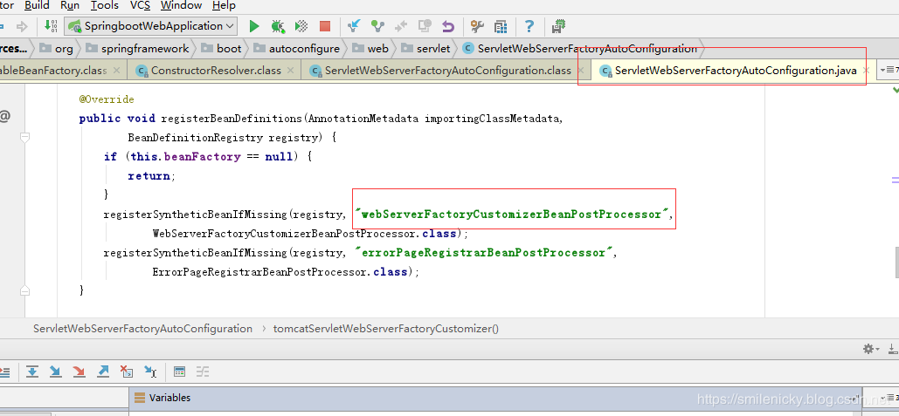
ok，继续调试源码，BeanWrapperImpl创建bean实例
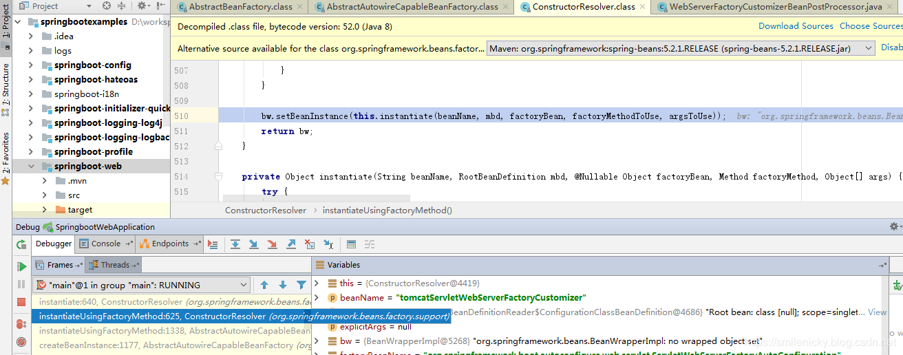
ok，Tomcat定制器类被调用了，是通过后置处理器调用的
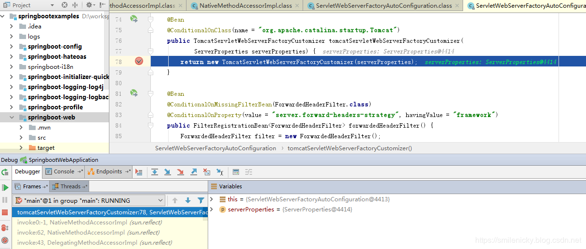
然后就是之前跟过的定制方法customize执行：
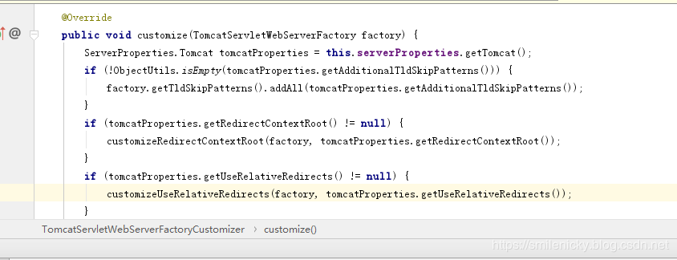
Tomcat的WebServer工厂类创建Tomcat对象实例，进行属性配置，引擎设置等等
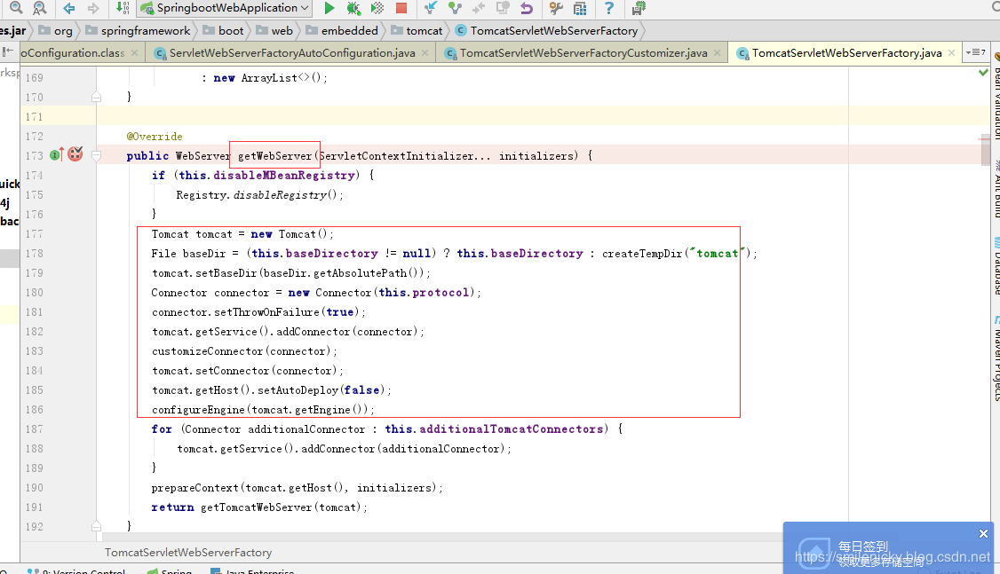
端口有设置就创建TomcatwebServer对象
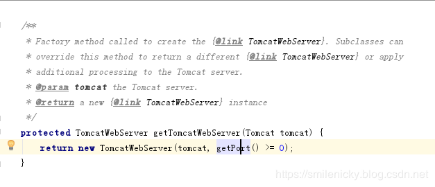
TomcatWebServer启动Tomcat，如图代码所示：
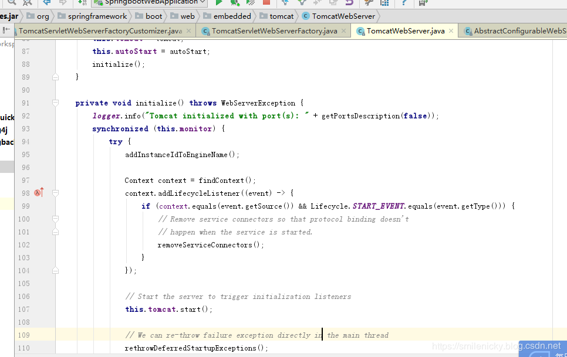
ok，跟了源码，您是否有一个疑问？Tomcat的工厂类TomcatServletWebServerFactory是什么时候创建的？好的，返回前面配置类看看，如图，这里用import引入了EmbeddedTomcat类

ok，EmbeddedTomcat是一个内部的配置类，条件是有引入Tomcat对应的jar，就会自动创建工厂类，很显然，Springboot默认是有引入的
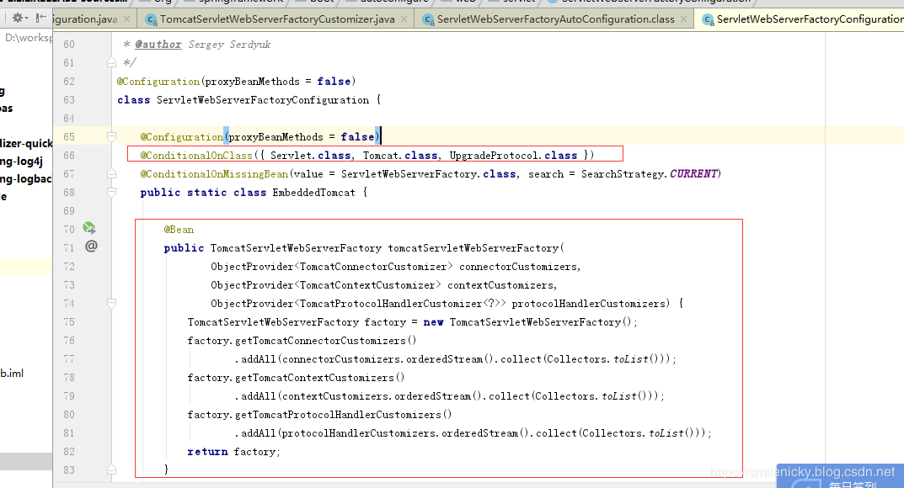
ok，经过源码比较简单的学习，思路就很清晰了，Springboot的ServletWebServerFactoryAutoConfiguration是嵌入式Servlet容器的自动配置类，这个类的主要作用是创建TomcatServletWebServerFactory工厂类，创建定制器类TomcatServletWebServerFactoryCustomizer，创建FilterRegistrationBean类，同时很关键的一步是注册后置处理器webServerFactoryCustomizerBeanPostProcessor，然后Springboot的Application类一启动，就会执行run方法，run经过一系列调用会通过ServletWebServerApplicationContext的onRefresh方法创建ioc容器，然后通过createWebServer方法，createWebServer方法会去ioc容器里扫描是否有对应的ServletWebServerFactory工厂类(TomcatServletWebServerFactory是其中一种)，扫描得到，就会触发webServerFactoryCustomizerBeanPostProcessor后置处理器类，这个处理器类会获取TomcatServletWebServerFactoryCustomizer定制器，并调用customize方法进行定制，这时候工厂类起作用，调用getWebServer方法进行Tomcat属性配置和引擎设置等等，再创建TomcatWebServer启动Tomcat容器，ok，本博客只是简单跟一下嵌入式Tomcat容器的启动过程，可以看出Springboot的强大，还是基于Spring框架的，比如本博客提到的后置处理器，以及bean工程创建bean实例的过程，都是通过Spring框架实现的